Hi! I'm Shuvendu Roy, a Ph.D Candidate, at Ambient Intelligence and Interactive Machines Laboratory (Aiim Lab) and Ingenuity Labs Research Institute, Queen’s University, Canada. I am very fortunate to be supervised by Prof. Ali Etemad. My research focuses on Multi-modal Unsupervised Representation Learning and Downstream Adaptation with a focus on reducing the need for large labelled data.
A summary of my profile is as follows: Published in top tier conference and journals such as ICLR, AAAI, TMLR, with a total of 30+ publications; Received 500+ citations; Skilled in python and different machine learning libraries (Pytorch, Tensorflow, etc); Experienced in deep learning method and model designing, training and deployment; 7+ years of involvement in academic and industry research of machine learning methods; Previous job/internship experiences in Google Research, and Vector Institute for AI.
Email | CV | Google Scholar | LinkedIn | Github
Education
- Doctor of Philosophy, Dept. of Electrical and Computer Engineering, Queen's University, Canada, 2022-Present.
- Master of Applied Science, Dept. of Electrical and Computer Engineering, Queen's University, Canada, 2020-2021.
Experiences
- Student Researcher, Google, May 2023 - Present.
- Research Assistant, Queen's University, Kingston, Canada, 2020 - Present.
- Teaching Assistant, Queen's University, Kingston, Canada, 2020 - Present.
- ELEC 472, Artificial Intelligence, Winter 2022.
- APSC 143, Introduction to Programming, Fall 2022.
- Applied ML Researcher, Robi Axiata Ltd., Bangladesh, 2019-2020.
- Jr. Software Engineer, REVE Systems, Bangladesh, 2019.
Currently working as a Student Research at google. The focus of my reseach is self-supervised represeantaion learning under special data settings.
I am currently working as a research assistant at Ambient Intelligence and Interactive Machines Laboratory (Aiim Lab) and Ingenuity Labs Research Institute, Queen’s University, Kingston, ON, Canada. I am supervised by Prof. Ali Etemad. My research focus is Computer Vision and Deep Learning with special interest on Unsupervised learning (e.g. Self-supervised learning, and Semi-supervised learning).
Research
|
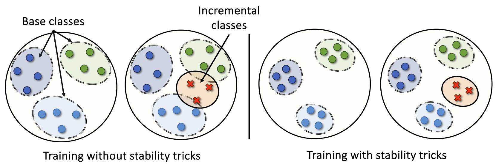
|
A Bag of Tricks for Few-Shot Class-Incremental Learning
Shuvendu Roy, Chunjong Park, Aldi Fahrezi, Ali Etemad Transactions on Machine Learning Research (TMLR 2024) Paper | ArXiv TLDR: We propose a unified bag-of-tricks framework for few-shot class-incremental learning (FSCIL), enhancing stability and adaptability to new tasks with limited samples. Organized into stability, adaptability, and training tricks, our approach mitigates forgetting, improves new class learning, and boosts overall performance. Abstract: We present a bag of tricks framework for few-shot class-incremental learning (FSCIL), which is a challenging form of continual learning that involves continuous adaptation to new tasks with limited samples. FSCIL requires both stability and adaptability, i.e., preserving proficiency in previously learned tasks while learning new ones. Our proposed bag of tricks brings together six key and highly influential techniques that improve stability, adaptability, and overall performance under a unified framework for FSCIL. We organize these tricks into three categories: stability tricks, adaptability tricks, and training tricks. Stability tricks aim to mitigate the forgetting of previously learned classes by enhancing the separation between the embeddings of learned classes and minimizing interference when learning new ones. On the other hand, adaptability tricks focus on the effective learning of new classes. Finally, training tricks improve the overall performance without compromising stability or adaptability. We perform extensive experiments on three benchmark datasets, CIFAR-100, CUB-200, and miniIMageNet, to evaluate the impact of our proposed framework. Our detailed analysis shows that our approach substantially improves both stability and adaptability, establishing a new state-of-the-art by outperforming prior works in the area. We believe our method provides a go-to solution and establishes a robust baseline for future research in this area. |
|
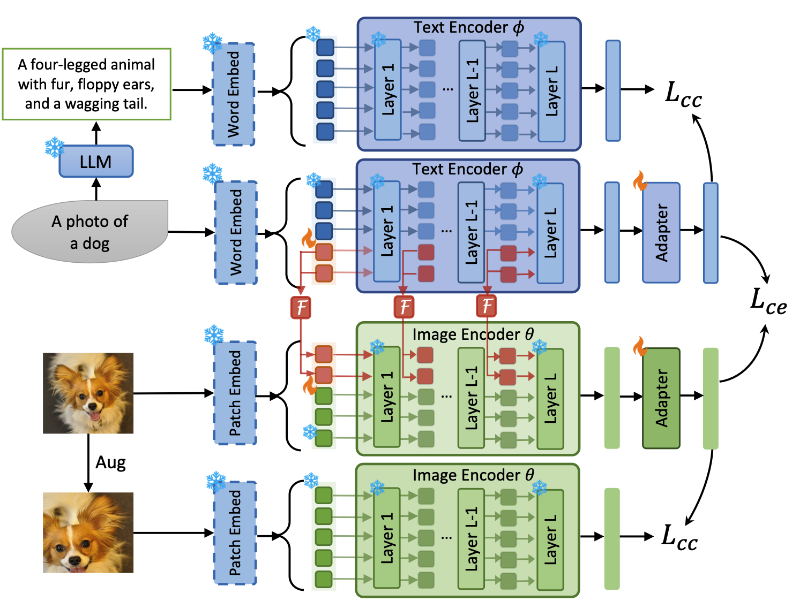
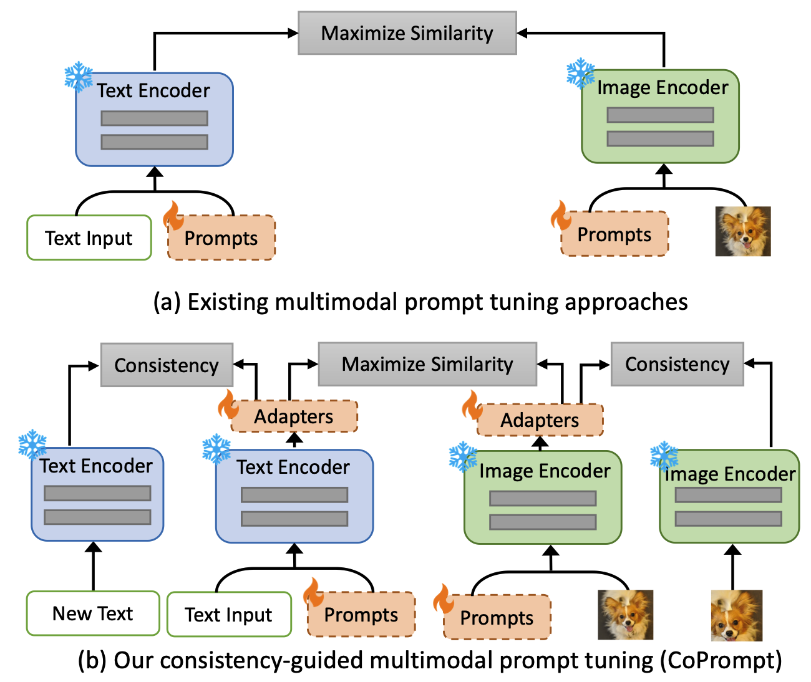
|
Consistency-guided Prompt Learning for Vision-Language Models
International Conference on Learning Representations (ICLR 2024) Workshop version: Learning Through Consistency for Prompt Tuning NeurIPS 2023 Workshop on Robustness of Few-shot and Zero-shot Learning in Foundation Models (R0-FoMo). Shuvendu Roy, Ali Etemad Paper | ArXiv | Workshop Paper | Code TLDR: We propose Consistency-guided Prompt learning (CoPrompt), a fine-tuning method for vision-language models that enhances generalization in few-shot settings. CoPrompt prevents overfitting by enforcing a consistency constraint between the trainable and pre-trained models, incorporating perturbed inputs for regularization, and combining prompts with adapters for greater tuning flexibility. Abstract: We propose Consistency-guided Prompt learning (CoPrompt), a new fine-tuning method for vision-language models. Our approach improves the generalization of large foundation models when fine-tuned on downstream tasks in a few-shot setting. The basic idea of CoPrompt is to enforce a consistency constraint in the prediction of the trainable and pre-trained models to prevent overfitting on the downstream task. Additionally, we introduce the following two components into our consistency constraint to further boost the performance: enforcing consistency on two perturbed inputs and combining two dominant paradigms of tuning, prompting and adapter. Enforcing consistency on perturbed input serves to further regularize the consistency constraint, thereby improving generalization. Moreover, the integration of adapters and prompts not only enhances performance on downstream tasks but also offers increased tuning flexibility in both input and output spaces. This facilitates more effective adaptation to downstream tasks in a few-shot learning setting. Experiments show that CoPrompt outperforms existing methods on a range of evaluation suites, including base-to-novel generalization, domain generalization, and cross-dataset evaluation. On generalization, CoPrompt improves the state-of-the-art on zero-shot tasks and the overall harmonic mean over 11 datasets. Detailed ablation studies show the effectiveness of each of the components in CoPrompt. We make our code available at https://github.com/ShuvenduRoy/CoPrompt. |
|
|
Scaling Up Semi-supervised Learning with Unconstrained Unlabelled Data
AAAI Conference on Artificial Intelligence (AAAI 2024) Workshop version: Does Unconstrained Unlabeled Data Help Semi-Supervised Learning? NeurIPS 2023 Workshop: Self-Supervised Learning - Theory and Practice. Shuvendu Roy, Ali Etemad Paper | ArXiv | Workshop Paper | Code TLDR: We introduce UnMixMatch, a semi-supervised learning framework designed to leverage unconstrained unlabeled data to enhance scalability and generalizability. Unlike existing methods that assume labeled and unlabeled data come from the same distribution, UnMixMatch overcomes this limitation with three key components: a supervised learner with strong regularization, a contrastive consistency regularizer, and a self-supervised loss. Abstract: We propose UnMixMatch, a semi-supervised learning framework which can learn effective representations from unconstrained unlabelled data in order to scale up performance. Most existing semi-supervised methods rely on the assumption that labelled and unlabelled samples are drawn from the same distribution, which limits the potential for improvement through the use of free-living unlabeled data. Consequently, the generalizability and scalability of semi-supervised learning are often hindered by this assumption. Our method aims to overcome these constraints and effectively utilize unconstrained unlabelled data in semi-supervised learning. UnMixMatch consists of three main components: a supervised learner with hard augmentations that provides strong regularization, a contrastive consistency regularizer to learn underlying representations from the unlabelled data, and a self-supervised loss to enhance the representations that are learnt from the unlabelled data. We perform extensive experiments on 4 commonly used datasets and demonstrate superior performance over existing semi-supervised methods with a performance boost of 4.79%. Extensive ablation and sensitivity studies show the effectiveness and impact of each of the proposed components of our method. The code for our work is publicly available. |
|
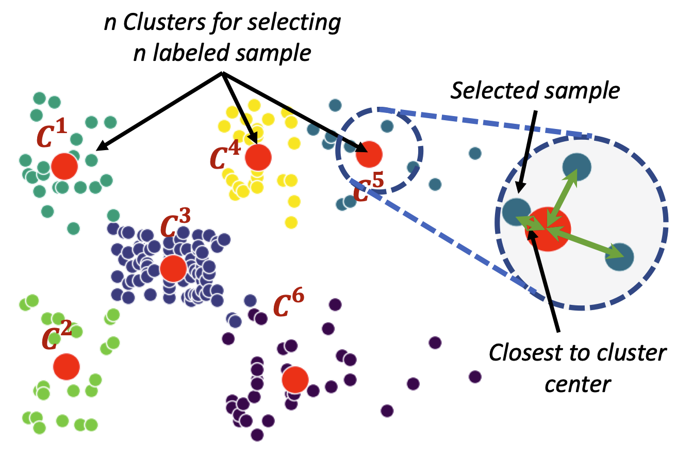
|
Impact of Strategic Sampling and Supervision Policies on Semi-supervised Learning
Shuvendu Roy, Ali Etemad IEEE Transactions on Emerging Topics in Computational Intelligence (IEEE TETCI 2024) Paper | ArXiv TLDR: This study investigates the impact of labeled sample selection and usage in semi-supervised learning when labeled data is scarce. Selecting representative samples for labeling improves performance by up to 7.5% in low-label scenarios, while label injection strategies during training show minimal effect. Abstract: In semi-supervised representation learning frameworks, when the number of labelled data is very scarce, the quality and representativeness of these samples become increasingly important. Existing literature on semi-supervised learning randomly sample a limited number of data points for labelling. All these labelled samples are then used along with the unlabelled data throughout the training process. In this work, we ask two important questions in this context: (1) does it matter which samples are selected for labelling? (2) does it matter how the labelled samples are used throughout the training process along with the unlabelled data? To answer the first question, we explore a number of unsupervised methods for selecting specific subsets of data to label (without prior knowledge of their labels), with the goal of maximizing representativeness w.r.t. the unlabelled set. Then, for our second line of inquiry, we define a variety of different label injection strategies in the training process. Extensive experiments on four popular datasets, CIFAR- 10, CIFAR-100, SVHN, and STL-10, show that unsupervised selection of samples that are more representative of the entire data improves performance by up to∼2% over the existing semi-supervised frameworks such as MixMatch, ReMixMatch, FixMatch and others with random sample labelling. We show that this boost could even increase to 7.5% for very few-labelled scenarios. However, our study shows that gradually injecting the labels throughout the training procedure does not impact the performance considerably versus when all the existing labels are used throughout the entire training. |
|
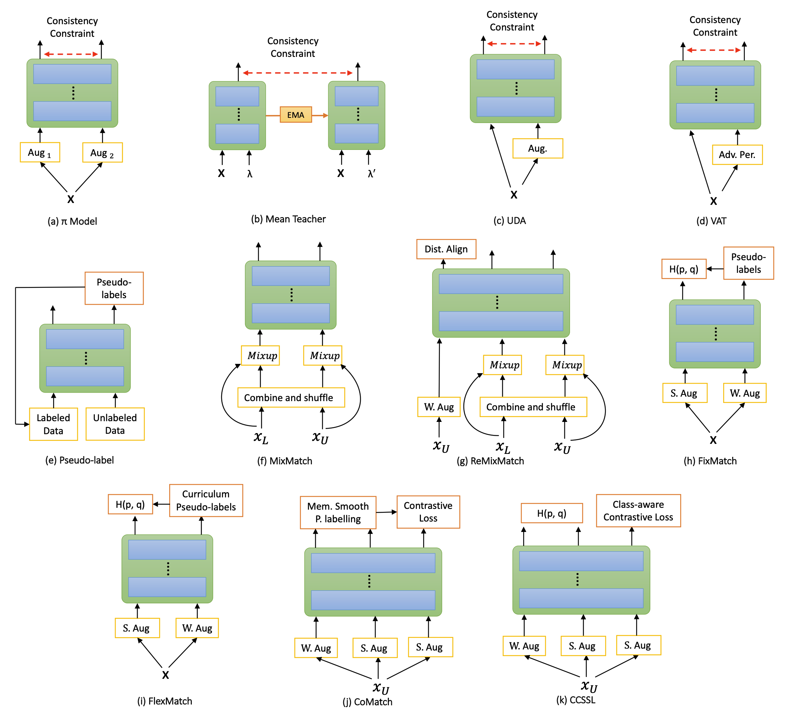
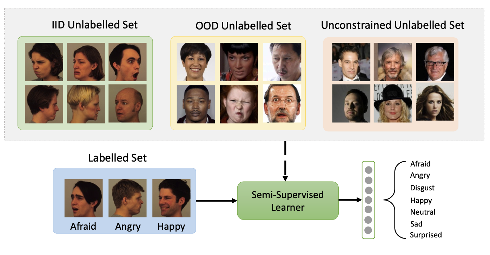
|
Exploring the Boundaries of Semi-Supervised Facial Expression Recognition using In-Distribution, Out-of-Distribution, and Unconstrained Data
Shuvendu Roy, Ali Etemad IEEE Transactions on Affective Computing (IEEE TAFFC 2024) Paper | ArXiv | Code TLDR: This study evaluates 11 recent semi-supervised learning methods for facial expression recognition (FER) across diverse settings, including in-distribution, out-of-distribution, and unconstrained data. FixMatch excels with in-distribution data, while ReMixMatch performs best in challenging scenarios, showcasing the consistent benefits of semi-supervised learning over supervised methods. Abstract: Deep learning-based methods have been the key driving force behind much of the recent success of facial expression recognition (FER) systems. However, the need for large amounts of labelled data remains a challenge. Semi-supervised learning offers a way to overcome this limitation, allowing models to learn from a small amount of labelled data along with a large unlabelled dataset. While semi-supervised learning has shown promise in FER, most current methods from general computer vision literature have not been explored in the context of FER. In this work, we present a comprehensive study on 11 of the most recent semi-supervised methods, in the context of FER, namely Pi-model, Pseudo-label, Mean Teacher, VAT, UDA, MixMatch, ReMixMatch, FlexMatch, CoMatch, and CCSSL. Our investigation covers semi-supervised learning from in-distribution, out-of-distribution, unconstrained, and very small unlabelled data. Our evaluation includes five FER datasets plus one large face dataset for unconstrained learning. Our results demonstrate that FixMatch consistently achieves better performance on in-distribution unlabelled data, while ReMixMatch stands out among all methods for out-of-distribution, unconstrained, and scarce unlabelled data scenarios. Another significant observation is that semi-supervised learning produces a reasonable improvement over supervised learning, regardless of whether in-distribution, out-of-distribution, or unconstrained data is utilized as the unlabelled set. We also conduct sensitivity analyses on critical hyper-parameters for the two best methods of each setting. |
|
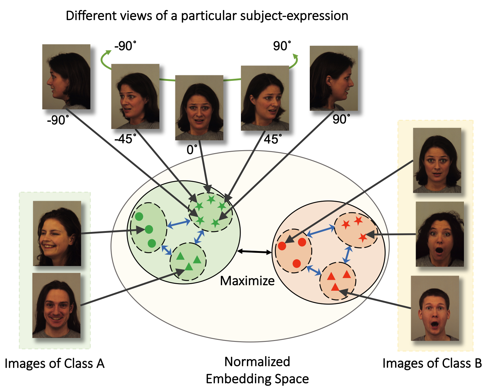
|
Contrastive Learning of View-invariant Representations for Facial Expressions Recognition
Shuvendu Roy, Ali Etemad ACM Transactions on Multimedia Computing, Communications and Applications (ACM TOMM 2023) Paper | ArVix TLDR: Introducing ViewFX, a novel facial expression recognition framework that accurately classifies emotions from various angles. ViewFX uses contrastive learning to learn view-invariant representation of the expression, and enable understanding expression from any view angles. Abstract: Although there has been much progress in the area of facial expression recognition (FER), most existing methods suffer when presented with images that have been captured from viewing angles that are non-frontal and substantially different from those used in the training process. In this article, we propose ViewFX, a novel view-invariant FER framework based on contrastive learning, capable of accurately classifying facial expressions regardless of the input viewing angles during inference. ViewFX learns view-invariant features of expression using a proposed self-supervised contrastive loss, which brings together different views of the same subject with a particular expression in the embedding space. We also introduce a supervised contrastive loss to push the learned view-invariant features of each expression away from other expressions. Since facial expressions are often distinguished with very subtle differences in the learned feature space, we incorporate the Barlow twins loss to reduce the redundancy and correlations of the representations in the learned representations. The proposed method is a substantial extension of our previously proposed CL-MEx, which only had a self-supervised loss. We test the proposed framework on two public multi-view facial expression recognition datasets, KDEF and DDCF. The experiments demonstrate that our approach outperforms previous works in the area and sets a new state-of-the-art for both datasets while showing considerably less sensitivity to challenging angles and the number of output labels used for training. We also perform detailed sensitivity and ablation experiments to evaluate the impact of different components of our model as well as its sensitivity to different parameters. |
|
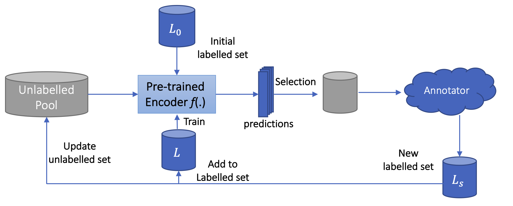
|
Active Learning with Contrastive Pre-training for Facial Expression Recognition
Shuvendu Roy, Ali Etemad 11th International Conference on Affective Computing and Intelligent Interaction (ACII 2023) Paper | ArVix | Code Deep learning has played a significant role in the success of facial expression recognition (FER), thanks to large models and vast amounts of labelled data. However, obtaining labelled data requires a tremendous amount of human effort, time, and financial resources. Even though some prior works have focused on reducing the need for large amounts of labelled data using different unsupervised methods, another promising approach called active learning is barely explored in the context of FER. This approach involves selecting and labelling the most representative samples from an unlabelled set to make the best use of a limited ‘labelling budget’. In this paper, we implement and study 8 recent active learning methods on three public FER datasets, FER13, RAF-DB, and KDEF. Our findings show that existing active learning methods do not perform well in the context of FER, likely suffering from a phenomenon called ‘Cold Start’, which occurs when the initial set of labelled samples is not well representative of the entire dataset. To address this issue, we propose contrastive self-supervised pre-training, which first learns the underlying representations based on the entire unlabelled dataset. We then follow this with the active learning methods and observe that our 2-step approach shows up to 9.2% improvement over random sampling and up to 6.7% improvement over the best existing active learning baseline without the pre-training. We will make the code for this study public upon publication at: github.com/ShuvenduRoy/ActiveFER. |
|
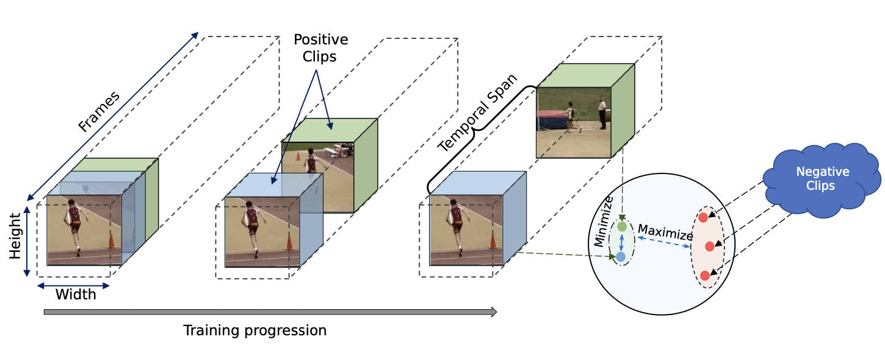
|
Temporal Contrastive Learning with Curriculum
Shuvendu Roy, Ali Etemad IEEE International Conference on Acoustics, Speech and Signal Processing, (ICASSP 2023) Paper | ArVix We present ConCur, a contrastive video representation learning method that uses curriculum learning to impose a dynamic sampling strategy in contrastive training. More specifically, ConCur starts the contrastive training with easy positive samples (temporally close and semantically similar clips), and as the training progresses, it increases the temporal span effectively sampling hard positives (temporally away and semantically dissimilar). To learn better context-aware representations, we also propose an auxiliary task of predicting the temporal distance between a positive pair of clips. We conduct extensive experiments on two popular action recognition datasets, UCF101 and HMDB51, on which our proposed method achieves state-of-the-art performance on two benchmark tasks of video action recognition and video retrieval. We explore the impact of encoder backbones and pre-training strategies by using R(2+1)D and C3D encoders and pre-training on Kinetics-400 and Kinetics-200 datasets. Moreover, a detailed ablation study shows the effectiveness of each of the components of our proposed method. |
|
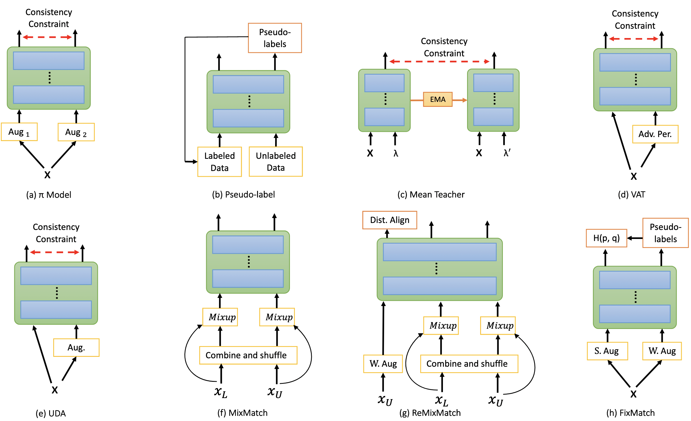
|
Analysis of Semi-Supervised Methods for Facial Expression Recognition
Shuvendu Roy, Ali Etemad IEEE International Conference on Affective Computing and Intelligent Interaction (ACII 2022) Paper | Project Page | Code Training deep neural networks for image recognition often requires large-scale human annotated data. To reduce the reliance of deep neural solutions on labeled data, state-of-the-art semi-supervised methods have been proposed in the literature. Nonetheless, the use of such semi-supervised methods has been quite rare in the field of facial expression recognition (FER). In this paper, we present a comprehensive study on recently proposed state-of-the-art semi-supervised learning methods in the context of FER. We conduct comparative study on eight semi-supervised learning methods, namely Pi-Model, Pseudo-label, Mean-Teacher, VAT, MixMatch, ReMixMatch, UDA, and FixMatch, on three FER datasets (FER13, RAF-DB, and AffectNet), when various amounts of labeled samples are used. We also compare the performance of these methods against fully-supervised training. Our study shows that when training existing semi-supervised methods on as little as 250 labeled samples per class can yield comparable performances to that of fully-supervised methods trained on the full labeled datasets. To facilitate further research in this area, we make our code publicly available at: https://github.com/ShuvenduRoy/SSL_FER. |
|
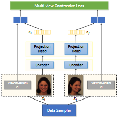
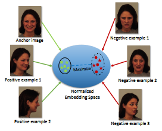
|
Self-supervised Contrastive Learning of Multi-view Facial Expressions
Shuvendu Roy, Ali Etemad ACM International Conference on Multimodal Interaction (ICMI 2021) Paper | ArXiv We propose Contrastive Learning of Multi-view facial Expressions (CL-MEx) to exploit facial images captured simultaneously from different angles towards FER. CL-MEx is a two-step training framework. In the first step, an encoder network is pre-trained with the proposed self-supervised contrastive loss, where it learns to generate view-invariant embeddings for different views of a subject. The model is then fine-tuned with labeled data in a supervised setting. We demonstrate the performance of the proposed method on two multi-view FER datasets, KDEF and DDCF, where state-of-the-art performances are achieved. Further experiments show the robustness of our method in dealing with challenging angles and reduced amounts of labeled data. |
|
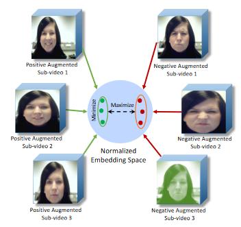
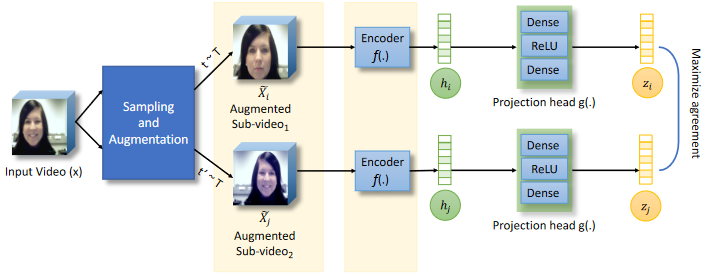
|
Spatiotemporal Contrastive Learning of Facial Expressions in Videos
Shuvendu Roy, Ali Etemad IEEE International Conference on Affective Computing and Intelligent Interaction (ACII 2021) Paper | ArXiv We propose a self-supervised contrastive learning approach for facial expression recognition (FER) in videos. We propose a novel temporal sampling-based augmentation scheme to be utilized in addition to standard spatial augmentations used for contrastive learning. Our proposed temporal augmentation scheme randomly picks from one of three temporal sampling techniques: (1) pure random sampling, (2) uniform sampling, and (3) sequential sampling. This is followed by a combination of up to three standard spatial augmentations. We then use a deep R(2+1)D network for FER, which we train in a self-supervised fashion based on the augmentations and subsequently fine-tune. |
|
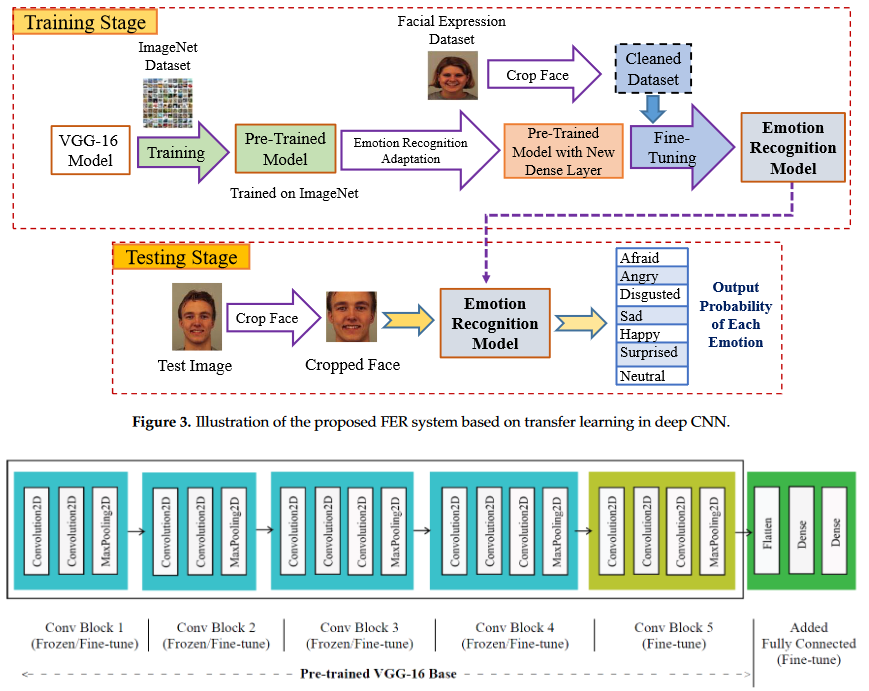
|
Facial Emotion Recognition Using Transfer Learning in the Deep CNN
MAH Akhand, Shuvendu Roy, Nazmul Siddique, Md Abdus Samad Kamal, Tetsuya Shimamura Electronics 10 (9), 2021 Paper | Undergrad Thesis | Code | Third Party Implementation For developing a highly accurate FER system, this study proposes a very Deep CNN (DCNN) modeling through Transfer Learning (TL) technique where a pre-trained DCNN model is adopted by replacing its dense upper layer(s) compatible with FER, and the model is fine-tuned with facial emotion data. A novel pipeline strategy is introduced, where the training of the dense layer(s) is followed by tuning each of the pre-trained DCNN blocks successively that has led to gradual improvement of the accuracy of FER to a higher level. |
Academic Services
Reviewing
- Computer Vision and Pattern Recognition (CVPR), 2023, 2024
- European Conference on Computer Vision (ECCV), 2022, 20024
- European Conference on Learning Representations (ICLR), 2025
- AAAI Conference on Artificial Intelligence, 2023, 2024, 2025
- IEEE Transactions on Affective Computing (TAFFC)
- IEEE Transactions on Artificial Intelligence (TAI)
- AAAI'22 Workshop on Human-Centric Self-Supervised Learning
- International Conference on Pattern Recognition (ICPR), 2022
- International Journal of Electrical and Computer Engineering (IJECE)
- Imaging Science Journal
- PeerJ Computer Science
- Springer Nature Artificial Intelligence Review, 2022
- Publons Profile
Recent Updates!
- [Jan 2024] Starting working at Vector Institute as an Applied Machine Learning Intern
- [May 2023] One paper accepted in TMLR'23
- [Feb 2023] Our paper CoPrompt is accepted in ICLR'23
- [Dec 2023] Our paper UnMixMatch is accepted in AAAI'24
- [May 2023] Starting working at Google as a Student Researcher
- [Feb 2023] One paper accepted in ICASSP'23
- [Jul 2022] One paper accepted in ACII'22
- [Jan 2022] Started Ph.D. at Queen's University, Kingston, Canada
- [Aug 2021] One paper accepted at ICMI'21